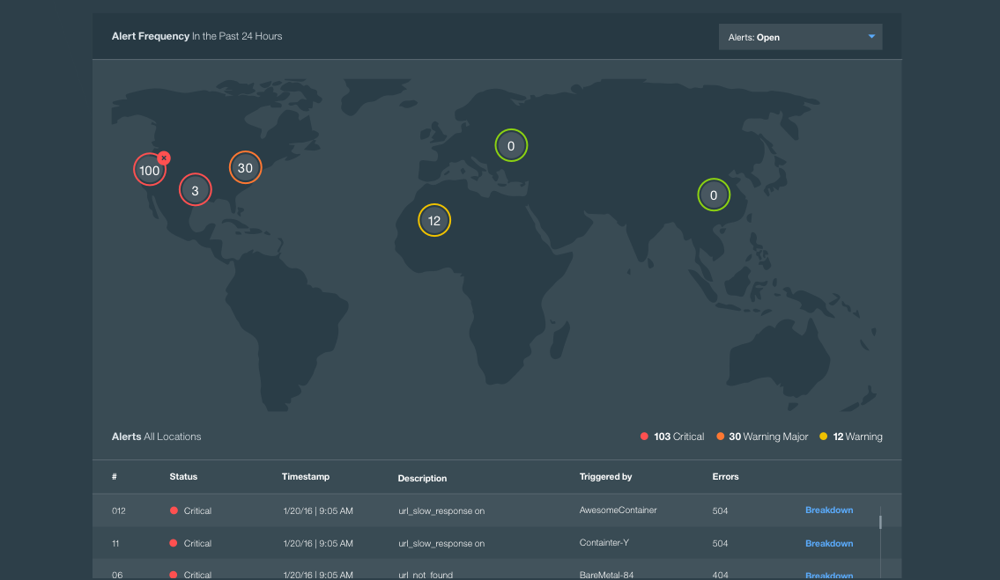

Welcome to Monitoring Here you can learn to:

Isolate where alerts and problems are stemming from

Conduct root cause analysis by correlating metrics with deployment activity

Test and Monitor your app's performance over time across different locations